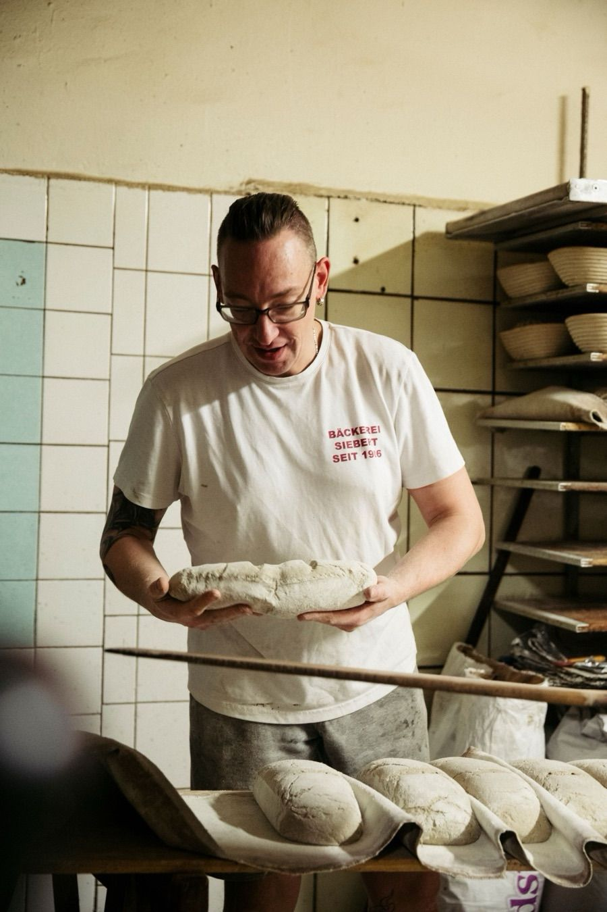

Die Titelgeschichte
Seit hundertzwanzig Jahren dieselbe Ladentür
Als Gustav Siebert im Jahr 1906 seine Backstube in der Schönfließer Straße eröffnete, war der Prenzlauer Berg ein Arbeiterviertel und der Raum, in dem heute die Konditorei steht, das Wohnzimmer der Familie. Großeltern und drei Kinder schliefen neben den Arbeitsgeräten. Umgezogen ist die Bäckerei seitdem nie.
Was folgte, liest sich wie ein Zeitstrahl der Berliner Geschichte: Inflation, zwei Weltkriege, die Mangelwirtschaft der DDR, die Wende. In jeder dieser Zeiten wurde an derselben Adresse Brot gebacken, nach denselben Rezepten, mit derselben Zutat, die sich nicht abkürzen lässt: Zeit.
Der Sauerteig reift zwölf bis sechzehn Stunden, der Brötchenteig ruht drei. Keine Tiefkühlteiglinge, keine Backmischungen. Zweimal, 2013 und 2017, zählte DER FEINSCHMECKER das Haus zu den besten Bäckern Deutschlands. Im Mai 2026 wählten die Berliner das Roggenmischbrot zum Publikumsliebling.

Man steht hier Schlange. Seit hundertzwanzig Jahren.
Über den Andrang am SamstagmorgenDer Anfang
Gustav Siebert, Bauernsohn aus Schönfließ in Ostpreußen, eröffnet die Bäckerei. Der Konditorraum ist zugleich Wohnzimmer.
Durch die Kriege
Albert Siebert bringt das Haus durch Hyperinflation und zwei Weltkriege. Nur durch familiären Verzicht übersteht der Betrieb die schweren Jahre.
Gegen die Mangelwirtschaft
Bodo Siebert hält das private Handwerk am Leben. Butter, Rosinen, Mandeln sind Mangelware, der Verstaatlichungsdruck groß. Die Familie bleibt standhaft.
Die Rettung der Ost-Schrippe
Als billige Aufbackbrötchen den Markt überschwemmen, hält Lars Siebert an der langen Teigführung fest. Das macht die Bäckerei zur Legende im Kiez.
Handwerk und Gegenwart
Dr. Anke Siebert übernimmt in fünfter Generation. Die Rezepte bleiben, die Prozesse werden digital, die Kasse bargeldlos.

Geöffnet Dienstag bis Freitag 6 bis 18.30 Uhr, Samstag bis 13.30 Uhr
Am besten probieren Sie selbst
Schönfließer Straße 12, Prenzlauer Berg · Montag Ruhetag
Anfahrt & Zeiten